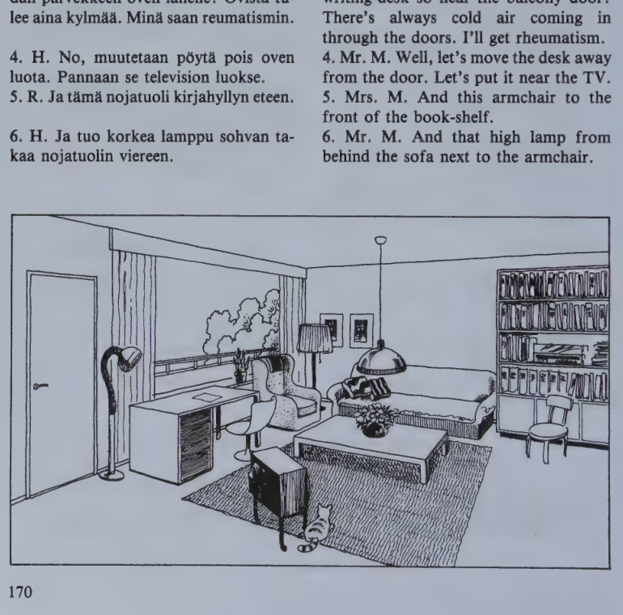
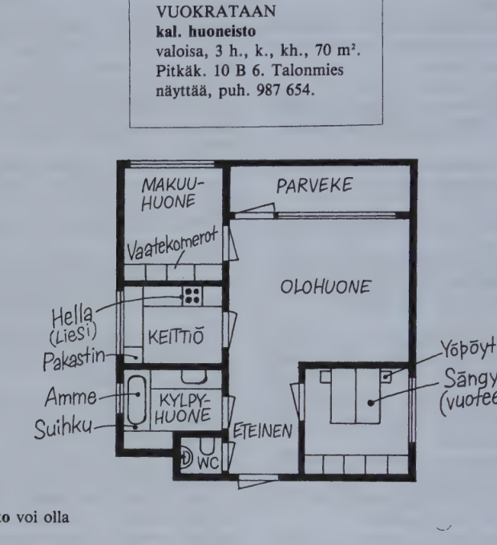
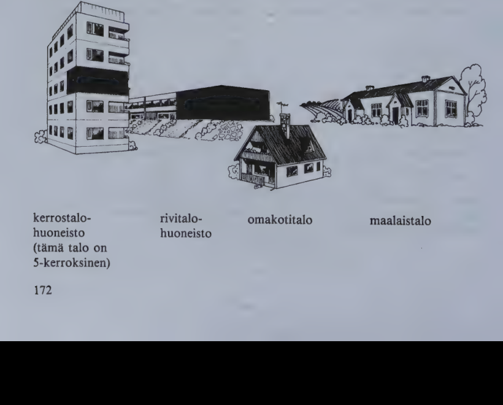
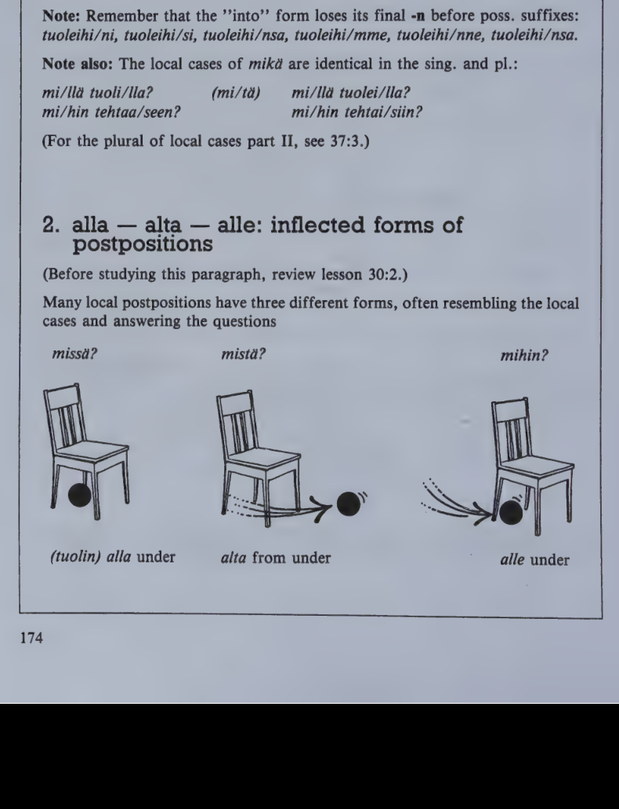

Kappale 34 / Lesson 34#
Makiset ovat kutsuneet vieraita / The Makinens have invited some guests#
Suomi |
English |
|---|---|
1. Hra Makinen. Kuinka kauan sina olet ollut Suomessa, Tom? |
1. Mr. Makinen. How long have you been in Finland, Tom? |
2. T. Kohta kuukauden. Mina tulin tanne elokuun alussa. |
2. T. It’ll soon be a month. I came here at the beginning of August. |
3. Rva M. No, kuinka sina taalla viihdyt? |
3. Mrs. M. Well, how do you like it here? |
4. T. Ainakin tahan saakka mina olen viihtynyt oikein hyvin. On ollut viela kaunista ja lamminta, ja kaikki on ollut uutta ja mielenkiintoista. |
4. T. At least so far I’ve liked it very much. It has still been fine and warm, and everything has been new and interesting. |
5. Rva M. Eiko sinulla ole ollut koti-ikava? |
5. Mrs. M. Haven’t you been homesick? |
6. T. Ei ollenkaan. Kaikki ovat olleet kovin ystavallisia. Minulla on ollut seuraa, minun ei ole tarvinnut olla yksin. |
6. T. Not at all. Everybody has been very kind. I’ve had company, I haven’t had to be alone. |
7. Hra M. Sehan on hyva. Toivottavasti sina olet saanut mukavan asunnon. |
7. Mr. M. That’s good. I hope you’ve got a nice apartment. |
8. T. En viela. Mina olen etsinyt koko ajan, mutta en ole loytanyt sopivaa asuntoa. |
8. T. Not yet. I’ve been looking for one all the time, but I haven’t found a suitable apartment. |
9. Rva M. Sinun on siis taytynyt asua hotellissa. Hotellihuoneet ovat aika kalliita opiskelijalle. |
9. Mrs. M. So you’ve had to stay at a hotel. Hotel rooms are quite expensive for a student. |
10. T. Mina olen samaa mielta. En mina voi jaada hotelliin. Kai mina pian loydan jonkinlaisen asunnon. |
10. T. I agree. I can’t remain at the hotel. I suppose I’ll soon find some kind of apartment. |
11. Hra M. Muuten, missa sina olet oppinut noin hyvin suomea? |
11. Mr. M. By the way, where did you learn Finnish so well? |
12. T. Kotona Yhdysvalloissa. Mina olen aina harrastanut kielia. Ja opiskeluaikana eraas huonetoverini oli suomalainen vaihto-opiskelija. Me olemme olleet kirjeenvaihdossa siita lahtien. |
12. T. At home in the States. I’ve always been interested in languages. And in college, a room-mate of mine was a Finnish exchange student. We’ve been corresponding ever since. |
13. Rva M. No, mita mielta sina olet: onko suomen kieli mahdotonta oppia? |
13. Mrs. M. Well, what’s your opinion: is Finnish impossible to learn? |
14. T. Ei tietystikaan. Mutta kylla mina olen sita mielta, etta se vaatii ahkeraa tyota ja hyvaa muistia. Muuten, oletteko te kayneet Amerikassa? |
14. T. Of course not. But I’m definitely of the opinion that it takes hard work and a good memory. By the way, have you been to America? |
15. Rva M. Emme viela. |
15. Mrs. M. Not yet. |
16. Hra M. Mutta me olemme suunnitelleet matkaa Yhdysvaltoihin tana vuonna. |
16. Mr. M. But we’ve been planning a trip to the U.S. this year. |
Muut vieraat saapuvat.
Suomi |
English |
|---|---|
17. Hra M. Paivaa paivaa, tervetuloa! Esko ja Tarja Vuori ovat vanhoja ystaviamme. Tom Lake on Yhdysvalloista. Me olemme kertoneet teille hanesta. |
17. Mr. M. Hello, nice to have you here! Esko and Tarja Vuori are old friends of ours. Tom Lake is from the United States. We’ve told you about him. |
18. T.V. Paivaa. Kauanko sina olet ollut meidan maassamme? |
18. T.V. Hello, Tom. How long have you been in our country? |
19. E.V. Ja miten sina taalla viihdyt? |
19. E.V. And how do you like it here? |
Mihin bussilippusi jai? - Kotiin.
Poydalle.
mieli (= mielipide) opinion
Mita mielta olette asiasta?
Olen sita mielta, etta ...
Olen samaa mielta kanssanne "I agree with you" != olen eri mielta
Mina viihdyn taalla. - Niin minakin.
Minusta taalla on kivaa.
- Niin minustakin.
Ruokakin on hyvaa.
Mina en viihdy taalla. - En minakaan.
Minusta taalla ei ole kivaa.
- Ei minustakaan.
Ruokakaan (= myoskaan ruoka) ei ole hyvaa.
Kielioppia / Structural notes#
1. Perfect tense#
nah/da to see
Affirmative |
English |
Negative |
English |
|---|---|---|---|
olen nah/nyt |
I have seen |
en ole nah/nyt |
I have not seen |
olet nah/nyt |
you have seen |
et ole nah/nyt |
you have not seen |
on nah/nyt |
he/she has seen |
ei ole nah/nyt |
he/she has not seen |
olemme nah/neet |
we have seen |
emme ole nah/neet |
we have not seen |
olette nah/neet |
you have seen |
ette ole nah/neet |
you have not seen |
ovat nah/neet |
they have seen |
eivat ole nah/neet |
they have not seen |
Question: olenko (mina) nah/nyt? etc.
Negative question: enko (mina) ole nah/nyt? etc.
Structure:
The auxiliary, which is always
olla, is in the present tense.The main verb is in the past participle (see 31:1): sing.
nah/nyt, pl.nah/neet.
Note:
te (one person) olette nah/nyt
te (many persons) olette nah/neet
The perfect tense is used very much in the same way in Finnish as in English. Sometimes, however, Finnish uses the perfect where English would prefer the past tense.
Examples:
Finnish |
English |
|---|---|
En ole koskaan kaynyt Skotlannissa. |
I never went to Scotland. |
Huomenta, Raili, oletko nukkunut hyvin? |
Good morning, Raili, did you sleep well? |
Mista olet ostanut tuon huivin? |
Where did you buy that scarf (which you go on wearing)? |
Missa te olette oppineet suomea? |
Where did you learn Finnish (which you still speak)? |
Seitseman veljesta on kirjoittanut Aleksis Kivi. |
Seven Brothers was written by Aleksis Kivi (the book is still with us). |
Tuomas on syntynyt v. 1950. |
T. (living person) was born in 1950. |
2. Complement of the verb olla (predikatiivi)#
The complement of the verb olla tells
what the subject is (noun complement), or
what the subject is like (adjective complement).
A. Noun complement#
Sing.
Uncountables, indefinite amount: partitive |
Countables, definite amount: basic form |
|---|---|
Mita tama on? What is this? |
Mika tama on? What is this? |
Se on tee/ta, jalkapallo/a, jaatelo/a. |
Se on kissa, jalkapallo, Liisan jaatelo. |
Neg. Se ei ole kissa etc. |
Pl.
Indefinite number: partitive |
Entity, pair, or series; definite number: basic form |
|---|---|
Mita nama ovat? What are these? |
Mitka nama ovat? What are these? |
Ne ovat lasej/a. They are glasses. |
Ne ovat silmalasi/t, Marin viinilasi/t. |
Neg. Ne eivat ole silmalasi/t. |
B. Adjective complement#
The use of the partitive or basic form depends on the quality of the subject.
a) Sing. subject#
Uncountable subject: partitive |
Countable subject: basic form |
|---|---|
Kahvi on kuuma/a. The coffee is hot. |
Pannu on/ei ole kuuma. The pot is (not) hot. |
Hiihtaminen on helppo/a. Skiing is easy. |
Kysymys on/ei ole helppo. The question is (not) easy. |
Kaikki oli uutta. Everything was new. |
Asia oli/ei ollut uusi. The matter was (not) new. |
Common mistake:
Tama ei ole kissaA.
Pannu ei ole kuumaA.
If the subject is not a noun (or a word used as a noun) or if there is no subject, use the partitive complement:
Finnish |
English |
|---|---|
On mahdoton/ta ymmartaa sinua. |
It is impossible to understand you. |
On hirvea/a, etta sellaista voi tapahtua. |
It is terrible that such things can happen. |
Lapissa on kaunis/ta. |
It is beautiful in Lapland. |
Some very common adjectives may appear in such sentences either in the part. or the basic form (helppo, vaikea, hauska, mukava, kiva, ikava, selva, kylma, lammin etc.):
Finnish |
English |
|---|---|
On helppo(a) oppia tata kielta. |
It is easy to learn this language. |
Taalla on lammin(ta). |
It is warm here. |
The adjectives hyva and paha are always used in the basic form in such sentences:
Finnish |
English |
|---|---|
(Oli) hyva, etta kerroit meille tasta. |
It was good that you told us about this. |
b) Pl. subject#
“Normal” plural: partitive |
Entity, pair, series: basic form |
|---|---|
Taulut ovat kalli/i/ta. Pictures are expensive. |
Silmalasit ovat/eivat ole kalli/i/t. The glasses (= a pair) are (not) expensive. |
Viime paivat ovat olleet kylmi/a. The past few days have been cold. |
TytOn kadet ovat eivat ole kylmA/t. The girl’s hands are (not) cold. |
Kirjat ovat hausko/j/a. Books are fun. |
Haat olivat/eivat olleet hauska/t. The wedding was (not) nice. |
Nuo talot ovat korke/i/ta. Those houses are high. |
Huoneen seinat ovat/eivat ole korkea/t. The walls of the room are (not) high. |
Common mistake:
MaitoA on valkoista.
KoiriA ovat kotielaimia.
When the sentence includes a complement of the verb olla, the subject cannot appear in the partitive.
Sanasto / Vocabulary#
Finnish |
English |
|---|---|
ahkera-a-n ahkeria (# laiska) |
hard-working, diligent |
+alku-a alun alkuja (# loppu) |
beginning, start |
etsi/a-n etsi-nyt (jotakin) |
to look for, search |
harrasta/a-n harrasti harrastanut (jotakin) |
to take an (active) interest in, go in for |
ikava-a-n ikavia |
tedium, longing, yearning; dull, boring, unpleasant |
jonkin/lai/nen-sta-sen-sia |
some kind of |
jaa/da-n jai jaanyt (johonkin) |
to stay, remain, be left |
-kaan (-kaan) (in negative sentences) |
not … either; often just an emphatic suffix |
+kirjeen/vaihto-a-vaihdon |
correspondence |
kohta (= pian) |
soon, presently |
koti-ikava-a-n |
home-sickness |
lahtien (= asti, saakka) |
from, since, ever since |
kesasta lahtien |
ever since the summer |
mielen/kiintoi/nen-sta-sen-sia |
interesting |
mieli mielta mielen mielia |
mind, soul, spirit; mood; opinion |
muisti-a-n muisteja |
memory (= ability to remember) |
muuten |
otherwise; by the way |
opiskelu-a-n |
study, studying, studies |
seura-a-n seuroja |
company; society |
+suunnitel/la suunnittelen suunnitteli suunnitellut |
to plan |
toivottavasti |
I hope, we hope, let’s hope that, hopefully |
+vaati/a vaadin vaati-nut |
to require, call for, demand |
+viihty/a viihdyn viihtyi viihtynyt |
to feel at home, like living somewhere |
+Yhdys/vallat (sing. valta) -valtoja-valtojen |
United States |
Yhdys/valloissa, -valloista, -valtoihin |
in, from, to the U.S. |
*
Finnish |
English |
|---|---|
haastattelu-a-n-ja |
interview |
+mieli/pide-tta-piteen-piteita |
opinion |
Kappale 35 / Lesson 35#
Millerit vuokraavat huoneiston / The Millers rent an apartment#
Herra ja rouva Miller, talonmies.
Suomi |
English |
|---|---|
1. T. Tama on hyva huoneisto. Kolme huonetta ja keittio. MennAAn ensin olohuoneeseen. |
1. J. This is a good apartment. Three rooms and a kitchen. Let’s go first into the living-room. |
2. H. Onpa hauska iso ikkuna! Mina pidan isoista ikkunoista, on tarpeeksi valoa. Ja kiva, etta on parveke. |
2. Mr. M. What a nice large window! I like large windows, there’s enough light. And how nice that there’s a balcony. |
3. R. Miksi he ovat panneet kirjoituspoydan parvekkeen oven lahelle? Ovista tulee aina kylmaa. Mina saan reumatismin. |
3. Mrs. M. Why did they place the writing-desk so near the balcony door? There’s always cold air coming in through the doors. I’ll get rheumatism. |
4. H. No, muutetaan poyta pois oven luota. Pannaan se television luokse. |
4. Mr. M. Well, let’s move the desk away from the door. Let’s put it near the TV. |
5. R. Ja tama nojatuoli kirjahyllyn eteen. |
5. Mrs. M. And this armchair to the front of the book-shelf. |
6. H. Ja tuo korkea lamppu sohvan takaa nojatuolin viereen. |
6. Mr. M. And that high lamp from behind the sofa next to the armchair. |

Suomi |
English |
|---|---|
7. R. Mina en tykkAA naista moderneista huonekaluista. |
7. Mrs. M. I don’t like this modern furniture. |
8. H. Mutta naissa tuoleissa on mukava istua, ja se on paaasia. MehAn olemme taalla vain vuoden. |
8. Mr. M. But these chairs are comfortable to sit, and that’s the main thing. We’ll only stay here for a year. |
9. T. Sitten tullaan keittioon. |
9. J. Then we come to the kitchen. |
10. R. No, se on siisti ja valoisa. Sahkohella … Jaakaappi voisi olla suurempi. |
10. Mrs. M. Well, it’s clean and light. An electric stove … The refrigerator might be bigger. |
11. T. Kylpyhuone on taalla keittion ja makuuhuoneiden valissa. Ja WC. |
11. J. The bathroom is here, between the kitchen and the bedrooms. And the toilet. |
12. R. Suomalaisilla on aina niin pieni kylpyhuone. |
12. Mrs. M. Finns always have such small bathrooms. |
13. H. Hehan kayttavat niin paljon saunaa. Katsotaan sitten makuuhuoneisiin. Ensin vanhempien makuuhuone. |
13. Mr. M. They use their saunas so much, don’t they? Let’s then look into the bedrooms. First the parents’ bedroom. |
14. R. Onpa epamukava sanky, kova kuin kivi. Osaammekohan me nukkua naissa? |
14. Mrs. M. What an uncomfortable bed, as hard as a stone. I wonder if we can sleep in these beds? |
15. H. Taytyy yrittaa. Tuo pienempi makuuhuone sopisi hyvin meidan lapsille. No, mitas sanot? |
15. Mr. M. We must try. That smaller bedroom would be all right for our children. Well, what do you say? |
16. R. Ajatellaan asiaa viela, Jack. Kaydaan muissakin huoneistoissa. |
16. Mrs. M. Let’s think it over, Jack. Let’s go and see some more apartments. |
17. H. Mutta jos toiset vievat taman, joka on niin hyvalla paikalla? |
17. Mr. M. But if somebody else takes this one, which is so well located? |
18. R. No, sama se, otetaan sitten tama. (Talonmiehelle.) Kiitoksia nayttamisesta! |
18. Mrs. M. Well, all right, let’s take this one, then. (To the janitor.) Thanks for showing us the apartment, Mr. Nieminen! |
yksio = 1 huoneen huoneisto
kaksio = 2 huoneen huoneisto
me makaamme sangyssa (= vuoteessa); sanky (vuode) on makuuhuoneessa
huone - huoneisto
kirja - kirjasto
huonekalu - (huone)kalusto
mukava != epamukava
varmasti != epavarmasti


Kielioppia / Structural notes#
1. Plural of nouns: local cases (I)#
The endings are, in general, the same as in the sing. (About the “into” case see below.)
The stem is obtained from the partitive pl. It always ends in the plural marker -i- (between vowels -j-).
This paragraph will deal with the large number of nouns which use the part. pl. stem unchanged all through their local cases. Such nouns are
words with no
k p tchanges, orwords with strong grade in the genitive sing.
Examples of words with no k p t changes:
Sing. |
Pl. |
|
|---|---|---|
tuoli |
tuolej/a |
|
jarvi (jarven) |
jarvi/a (jarvi-) |
|
“on” |
tuoli/lla |
tuolei/lla |
jarve/lla |
jarvi/lla |
|
“from” |
tuoli/lta |
tuolei/lta |
jarve/lta |
jarvi/lta |
|
“onto” |
tuoli/lle |
tuolei/lle |
jarve/lle |
jarvi/lle |
|
“in” |
tuoli/ssa |
tuolei/ssa |
jarve/ssa |
jarvi/ssa |
|
“out of” |
tuoli/sta |
tuolei/sta |
jarve/sta |
jarvi/sta |
|
“into” |
tuoli/in |
tuolei/hin |
jarve/en |
jarvi/in |
|
huonee/seen |
huonei/siin |
For these five local cases, the endings are identical with those of the sing. forms.
The “into” case has the same endings as in the sing., except that the pl. for -seen is -siin (sometimes also -hin). By far the most common “into” ending in the pl. is -hin.
Examples of words with strong grade in the genitive sing.:
Sing. |
Pl. |
|
|---|---|---|
+tehdas (tehtaan) |
tehtai/ta |
|
+liike (liikkee/n) |
liikkei/tta |
|
“on” |
tehtaa/lla |
tehtai/lla |
liikkee/lla |
liikkei/lla |
|
“from” |
tehtaa/lta |
tehtai/lta |
liikkee/lta |
liikkei/lta |
|
“onto” |
tehtaa/lle |
tehtai/lle |
liikkee/lle |
liikkei/lle |
|
“in” |
tehtaassa |
tehtai/ssa |
liikkeessa |
liikkei/ssa |
|
“out of” |
tehtaasta |
tehtai/sta |
liikkeesta |
liikkei/sta |
|
“into” |
tehtaaseen |
tehtai/siin |
liikkeeseen |
liikkei/siin |
Remember that the “into” form loses its final -n before poss. suffixes: tuoleihi/ni, tuoleihi/si, tuoleihi/nsa, tuoleihi/mme, tuoleihi/nne, tuoleihi/nsa.
The local cases of mika are identical in the sing. and pl.:
mi/lla tuoli/lla? mi/lla tuolei/lla?
mi/hin tehtaaseen? mi/hin tehtai/siin?
2. alla - alta - alle: inflected forms of postpositions#
Many local postpositions have three different forms, often resembling the local cases and answering the questions missa? mista? mihin?

Used similarly are keskella in the middle, lahella near, paalla on top of, sisalla inside, valilla between, ymparilla around, alapuolella underneath, ylapuolella above, sisapuolella inside, ulkopuolella outside.
Used similarly are sisassa inside, vieressa by, next to, valissa between.
Note: luo/luokse and taa/taakse are interchangeable, except that the longer form must be used in connection with poss. suffixes: Menen Liisan luo(kse). Menen hanen luokse/en (luokse/nsa).
Sanasto / Vocabulary#
Finnish |
English |
|---|---|
epa- |
un-, in-, dis-, non- |
hella-a-n helloja (= liesi) |
stove |
huoneisto-a-n-ja |
apartment, flat |
huone/kalu-a-n-ja |
piece of furniture; pl. furniture |
+jaa/kaappi-a-kaapin-kaappeja |
refrigerator |
korkea-(t)a-n korkeita |
high |
kylpy/huone-tta-en-ita |
bathroom |
+kaytta/a kaytan kaytti kayttanyt (jotakin) |
to use; to run, operate |
makuu/huone |
bedroom |
moderni-a-n moderneja |
modern |
+muutta/a muutan muutti muuttanut |
to change; to move |
noja/tuoli-a-n-tuoleja |
armchair, easy chair |
olo/huone |
livingroom |
pakast/in-ta-imen-imia |
freezer |
+parveke-tta parvekkeen parvekkeita |
balcony |
suihku-a-n-ja |
shower |
sahko-a-n-ja |
electricity |
talon/mies-ta-miehen-miehia |
janitor, caretaker (of a house) |
valo-a-n-ja |
light |
valoisa-a-n valoisia (# pimeA) |
light, bright, well-lighted |
WC WC:ta WC:n (colloq. vessa) |
toilet, restroom |
vuokra/ta-an-si-nnut |
to rent, hire, let, lease |
+yritta/a yritan yritti yrittanyt |
to attempt, try, undertake |
*
Finnish |
English |
|---|---|
+kalustettu-a kalustetun kalustettuja (# kalustamaton) |
furnished |
kirjasto-a-n-ja |
library |
nelio/metri-a-n-metreja (abbr. m2) |
square meter |